Week 3 Class Exercise: Building The 2048 Game Together
Chris Tralie
Overview / Logistics
The purpose of this class exercise is to teach you how to write and test methods that do very specific tasks, and then to see how they all fit together to accomplish a complex task. This should nail home that point that you should always split complex programs up into simpler, small tasks and test them each rigorously before combining them into a whole, and also that it's possible to create specifications for code that are precise enough that different people can work on different parts of the same program. As a bonus, you will get some great practice with 2D arrays, which will help you on the next assignment
Students will split up into groups to specialize on one small piece of the logic for the game 2048, and we will then put them all together to make a complete game that we play as a class
You can obtain the code from github with the command
git clone https://github.com/ursinus-cs174-s2022/Week3_2048.git
You'l be editing the code in game.cpp. Some groups may use the function rand(), which I implemented in randutils.cpp to return a random number between 0 and 1. I've provided a makefile, so you can build the code with make and run it with ./game
Learning Objectives
- Write methods to fit a specification
- Access and modify elements in 2D array
- Write loops that work in concert with 2D arrays
Background: 2048
2048 is a simple but surprisingly addictive game that was all the rage about eight years ago. It also happens to be at the right level of complexity for where we are now with our coding skills. Click here to read the rules for the game, and please play the game yourself below with the 4 arrow keys to familiarize yourself with the rules (Javascript implementation courtesy of Kunal Mohta)
Programming Tasks
There are many ways to implement the logic in this game, but we will be breaking it down into a set of very specific tasks that each group will work on. Here are the different tasks that each group will implement. Each group should have a designated coder who shares their screen, a note-taker who keeps track of the approaches that were tried and the difficulties that the group ran into.
- Group 1:
addRandom() and makeRandomGrid()
-
Group 2:
moveRight()
-
Group 3:
moveDown()
-
Group 4:
combineRight()
-
Group 5:
combineDown()
-
Group 6:
flipHorizontally() and flipVertically()
-
Group 7:
isFull() and isOver()
Students should test their methods rigorously before declaring victory. You may want to fill in the method addRandom() and makeRandomGrid()moveRight()
moveDown()
combineRight()
combineDown()
flipHorizontally() and flipVertically()
isFull() and isOver()
makeMyOwnGrid() to fill in specific example to test your code on to make sure it handles all cases. I've given some examples below in the different task sections that you should verify give the right outputs. As an example of how you might setup a grid, the following code
Prints out a grid that looks like this
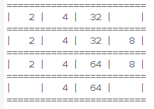Group 1: addRandom() and makeRandomGrid()
The addRandom() method should turn exactly one empty cell anywhere on the board at random into either a 2 or a 4. The method should not overwrite a cell that is already occupied. Below is an example of two calls of addRandom() in a row. The first one adds a 4 in the upper right, and the second one adds a 2 on the left of the second row.
printBoard() | printBoard() | |
| 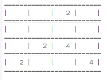 | 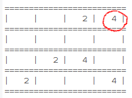 | 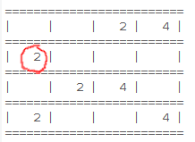 |
Once you are finished this method, you should create another method makeRandomGrid(int numInitial) that takes one integer, which is the number of random 2s or 4s to put down on the grid in random positions. This should be as simple as calling your makeRandomGrid() function numInitial times in a row.
To aid you, use the rand() method that I provided, which returns random numbers between 0 and 1.
Group 2: moveRight()
Fill in the method moveRight() to take the nonzero elements in the current board and move them all to the right so that there are no gaps and everything is touching the right of the board. Don't worry about combining adjacent elements that are the same; that will be the job of another group.
As an example, consider a call of moveRight() on the board below
moveRight() |
|
| 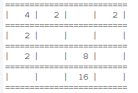 | 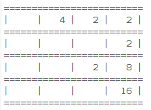 |
Group 3: moveDown()
Fill in the method moveDown() to take the nonzero elements in the current board and move them all down so there
are no gaps and everything is touching the bottom. Don't worry about combining adjacent elements that are the same; that will be the job of another group.
As an example, consider a call of moveDown() on the board below
moveDown() |
|
| 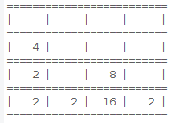 |
Group 4: combineRight()
Fill in the method combineRight() to combine all adjacent numbers that are the same in a particular row. There are three cases to consider
- There are two adjacent elements that are the same. In this case, put a zero in the place of the first one, and replace the second one with twice its value
- There are three in a row. In this case, put a zero in the first place to make it empty, keep the original value in the second place, and put twice the original value in the third place.
- There are 4 in a row. Put zeros in the first two, and put twice the value in the second two.
Below is an example of the effect this would have on a particular board
| combineRight() | |
| 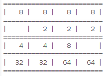 |  |
Group 5: combineDown()
Fill in the method combineDown() to combine all adjacent numbers that are the same in a particular column. There are three cases to consider
- There are two adjacent elements that are the same. In this case, put a zero in the place of the first one, and replace the second one with twice its value
- There are three in a row. In this case, put a zero in the first place to make it empty, keep the original value in the second place, and put twice the original value in the third place.
- There are 4 in a row. Put zeros in the first two, and put twice the value in the second two.
Below is an example of the effect this would have on a particular board
| combineDown() | |
| 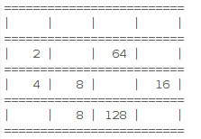 |
Group 6: flipHorizontally() and flipVertically()
Fill in the method flipHorizontally() to flip all of the elements in the board to the from left/right, right/left in a mirror reflection. Here's an example of the effect of this on a particular board
flipHorizontally() | |
| 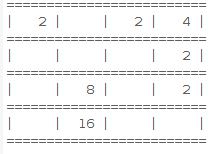 |
Then fill in the method flipVertically() to flip all of the elements in the board from up/down, down/up in a mirror reflection.Here's an example of the effect of this on a particular board
flipVertically() | |
| 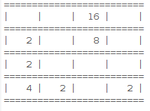 |
Group 7: isFull() and isOver()
Fill in the method isFull(), which returns true if the board is full, or false otherwise. Then, if time permits, implement the method isOver() that returns true if the the board is full and it is not possible to make any moves. or false otherwise.
For example, here is a board that is full but in which it is still possible to make a move (isFull() is true but isOver() is false)
And here is a board that is full and where no more moves are possible, so the game should be over (isFull() is true and isOver() is true)